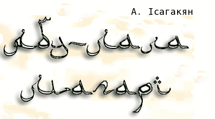

Заспiв
Абу-Лала Магарі,
Славетний поет з Багдада,
Кілька десятиліть проживав
В цім казковім місті халіфіф,
Знав смак роскошів і смак слави,
Ділив трапезу з багатіями й можновладцями,
З мудрецями та вченими заходив у спір,
Любив друзів тай випробував їх,
Побував у краях багатьох народів,
Придивлявсь до людей, до їх звичаїв,
І проникливий дух його пізнав людину,
Пізнав і якнайглибше зненавидив людство
Та закони його.
І, не маючи ані дітей, ні дружини,
Все богацтво своє розділив-роздав вбогим,
Невеличкий лиш взяв караван верблюдів
З припасом, з їстивним,
Та якось вночі, коли Багдад спав
На вкритих кіпарисами берегах Тигру,
Потай покинув місто...